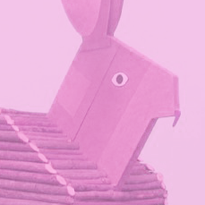

Faculty

Welcome, and welcome back.
The BTU Lab exists to facilitate as much student, faculty and staff coursework, research and experimentation as possible. We support as many as 7000 coursework hours per semester.
Because of this incredible demand, expectations for students, including yours, and faculty are covered in a series of brief, mandatory, one-time orientations.
In addition, for faculty, this page is set up to help you identify needs for yourself and your students and to direct you to the necessary next steps for the our collective success.
As always, if you have any questions please contact me at "zack.weaver@colorado.edu". Welcome, and welcome back, to the ATLAS Institute and the BTU Lab.
Zack Weaver,
Assistant Teaching Professor, ATLAS Institute
Director, BTU Lab
Resources to Help You Get Started
TEACHING AN UPCOMING CLASS* using the BTU Lab? Please, fill out this very brief FORM. (*Required every semester)
NEED TO KNOW MORE about specific resources for your class? Follow the links below.
Laser Cutting

Laser cutter access requires a one-time orientation. The schedule for this, and all BTU events can be found on the CALENDAR page of the BTU website.
Additional support for students is explained on the LASERS page of the BTU website.
Instructional requirements for faculty needing laser cutters can be found HERE!
3D Printing

3D Printing access requires a one-time, 10-15 minute orientation for all users. This orientation can be scheduled for individuals or classes, upon request.
To learn about available resources or to request an orientation, please visit the 3D PRINTING page of the BTU website.
Instructional requirements for faculty needing 3D printers can be found HERE!
Wood Shop

Wood shop access requires a one-time orientation regardless of past experience. The schedule for this and all BTU events can be found on the CALENDAR page of the BTU website.
Additional information about wood shop tools and policies can be found on the WOOD SHOP page of the BTU website.
Instructional requirements for faculty needing the wood shop can be found HERE!
Other Resources
BTU has many additional resources, which are explained on the BTU WEBSITE, as well as requirements for any training you might need.
Support is also provided by BTU's amazing student staff, the BTU MISCHIEF MAKERS! Each of them offer instructional support in many topics, listed on the Mischief Makers page, along with their contact information.
NEED MORE HELP from staff? Below is the regular schedule and contact information for the current semester.
Pending...
We Love Seeing What You Make Possible
You and your students can help us out by following and tagging your RAD projects on Instagram, @btulab_cu.